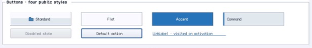

class · visual
ButtonBase
ButtonBase is the authoritative retained command state machine for pointer, keyboard, mnemonic, semantic, and dialog activation, with theme/compatibility rendering, image-list resolution, content alignment, explicit padding, disclosure state, and lifetime-safe events.
Visual evidence

Ownership and hierarchy
- Hierarchy
- Control → ButtonBase
- Declaration
- include/gui_forms/controls/button_base/button_base.hpp:42
- Definition
- src/controls/button_base/button_base.cpp
Declared methods
ButtonBase public
explicit ButtonBase(StableId stable_id, std::string text =Constructs a focusable hand-cursor command and registers reflected text, font, image, and content-padding properties.
text public
[[nodiscard]] const std::string& text() const noexceptReturns authored button text including mnemonic markers.
set_text public
virtual void set_text(std::string text)Commits text and invalidates measure, paint, and semantics before publishing text_changed.
font public
[[nodiscard]] FontSpec font() const noexceptReturns the explicit button content font.
set_font public
void set_font(FontSpec font)Validates and commits the FontSpec for content measurement and painting.
style public
[[nodiscard]] const BasicControlStyle& style() const noexceptReturns the explicit compatibility style or active Theme basic style.
has_style_override public
[[nodiscard]] bool has_style_override() const noexceptReports whether compatibility frame/text painting is authoritative.
set_style public
void set_style(BasicControlStyle style)Installs an explicit BasicControlStyle and invalidates visual/semantic state.
clear_style public
void clear_style()Removes compatibility colors and resumes role-recipe rendering.
image public
[[nodiscard]] ImageId image() const noexceptReturns the direct generational ImageId, if direct-image selection is active.
set_image public
void set_image(ImageId image)Validates Window ownership, selects direct image mode, and clears key/index selection atomically.
clear_image public
void clear_image()Clears direct/key/index image selection through the common image mutation law.
image_list public
[[nodiscard]] std::shared_ptr<ImageList> image_list() const noexceptReturns the retained ImageList owner used for state/density resolution.
set_image_list public
void set_image_list(std::shared_ptr<ImageList> image_list)Validates liveness, Window ownership, and current index before reconnecting change observation.
image_index public
[[nodiscard]] int image_index() const noexceptReturns the selected ImageList index or -1 when index selection is inactive.
set_image_index public
void set_image_index(int image_index)Validates range, selects index mode, and clears direct/key selection atomically.
image_key public
[[nodiscard]] const std::string& image_key() const noexceptReturns the UTF-8 ImageList key used by key selection mode.
set_image_key public
void set_image_key(std::string image_key)Validates UTF-8 and length, selects key mode, and clears direct/index selection.
image_alignment public
[[nodiscard]] ContentAlignment image_alignment() const noexceptReturns independent image alignment used for overlay content.
set_image_alignment public
void set_image_alignment(ContentAlignment alignment)Validates the nine-position vocabulary and commits paint/semantic alignment.
text_alignment public
[[nodiscard]] ContentAlignment text_alignment() const noexceptReturns text or combined-group alignment within padded content bounds.
set_text_alignment public
void set_text_alignment(ContentAlignment alignment)Validates the nine-position vocabulary and commits paint/semantic alignment.
text_image_relation public
[[nodiscard]] TextImageRelation text_image_relation() const noexceptReturns overlay or ordered horizontal/vertical image-text composition.
set_text_image_relation public
void set_text_image_relation(TextImageRelation relation)Validates composition vocabulary and invalidates measure, paint, and semantics.
image_gap public
[[nodiscard]] double image_gap() const noexceptReturns logical separation used when image and text do not overlay.
set_image_gap public
void set_image_gap(double gap)Accepts a finite zero-to-64 gap and invalidates size and rendering.
content_padding public
[[nodiscard]] Insets content_padding() const noexceptReturns explicit left/top/right/bottom insets between frame and command content.
set_content_padding public
void set_content_padding(Insets padding)Validates finite zero-to-128 insets and applies them to desired size and content geometry atomically.
use_mnemonic public
[[nodiscard]] bool use_mnemonic() const noexceptReports whether authored ampersands define command mnemonics.
set_use_mnemonic public
void set_use_mnemonic(bool value)Toggles mnemonic parsing and invalidates retained content and semantics.
perform_click public
bool perform_click()Runs availability and validation gates, then invokes the same authoritative activation path as user input.
pressed_visual public
[[nodiscard]] bool pressed_visual() const noexceptCombines retained pointer and keyboard press states into the current visual cue.
focused_visual public
[[nodiscard]] bool focused_visual() const noexceptReports the retained focus cue state.
hovered_visual public
[[nodiscard]] bool hovered_visual() const noexceptReports the retained hover cue state.
expanded_state public
[[nodiscard]] std::optional<bool> expanded_state() const noexceptReturns absent for ordinary commands or collapsed/expanded for disclosure owners.
set_expanded_state public
void set_expanded_state(std::optional<bool> expanded)Commits optional disclosure state and invalidates visual and semantic projection.
clicked public
[[nodiscard]] Event<ButtonBase&>& clicked() noexceptReturns the lifetime-safe command event published by the authoritative activation path.
text_changed public
[[nodiscard]] Event<const std::string&>& text_changed() noexceptReturns the event published after authored text commits.
measure public
[[nodiscard]] Size measure(Size available) overrideCombines resolved image/text geometry, relation, gap, and ContentPadding under the available constraint.
on_paint public
void on_paint(Painter& painter, Rect local_damage) overrideSelects compatibility or theme rendering, records frame/material cues, then lays out image and text.
visual_outsets public
[[nodiscard]] Insets visual_outsets() const noexcept overrideReports active material shadows unless compatibility style painting is selected.
on_pointer public
void on_pointer(PointerEvent& event) overrideMaintains hover/engaged/pressed state and qualifies activation through normalized primary-pointer input.
on_key public
void on_key(KeyEvent& event) overrideMaintains Space/Enter pressed state and activates only on the matching normalized release.
on_focus_changed public
void on_focus_changed(bool focused) overrideCommits focus cues and cancels incomplete keyboard presses when focus leaves.
on_activate public
void on_activate() overridePublishes clicked through the lifetime-safe event path.
semantic_descriptor public
[[nodiscard]] SemanticDescriptor semantic_descriptor() const overrideProjects button role, displayed name, disabled/focused/expanded state, and press action.
on_semantic_action public
bool on_semantic_action(SemanticAction action, std::string_view value) overrideRoutes semantic press through perform_click and rejects unrelated actions.
local_bounds protected
[[nodiscard]] Rect local_bounds() const noexceptReports the current local bounds value without mutation.
display_text protected
[[nodiscard]] std::string display_text() constReports the current display text value without mutation.
paint_button_frame protected
void paint_button_frame(Painter& painter, Rect bounds, bool default_cue) constReports the current paint button frame value without mutation.
paint_button_text protected
void paint_button_text(Painter& painter, Rect bounds, std::string_view text) constReports the current paint button text value without mutation.
paint_button_content protected
void paint_button_content(Painter& painter, Rect bounds, std::string_view text, Color foreground, Point offset =Public ButtonBase operation. Its exact signature is inventoried here; follow the linked implementation for callback order and failure behavior.
paint_themed_button protected
void paint_themed_button(Painter& painter, Rect bounds, ControlVisualRole role, bool default_cue, bool command_alignment = false) constReports the current paint themed button value without mutation.
resolved_button_image protected
[[nodiscard]] ImageListResolution resolved_button_image( bool selected = false) const noexceptReports the current resolved button image value without mutation.
on_attached_to_window protected
void on_attached_to_window() overridePublic ButtonBase operation. Its exact signature is inventoried here; follow the linked implementation for callback order and failure behavior.
perform_dialog_command protected
bool perform_dialog_command() overridePublic ButtonBase operation. Its exact signature is inventoried here; follow the linked implementation for callback order and failure behavior.
supports_dialog_command protected
[[nodiscard]] bool supports_dialog_command() const noexcept overrideReports the current supports dialog command value without mutation.
mnemonic_matches protected
[[nodiscard]] bool mnemonic_matches( char32_t character) const noexcept overrideReports the current mnemonic matches value without mutation.
process_mnemonic_self protected
bool process_mnemonic_self(char32_t character) overridePublic ButtonBase operation. Its exact signature is inventoried here; follow the linked implementation for callback order and failure behavior.